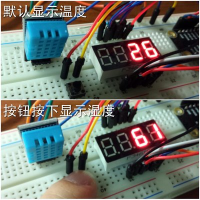
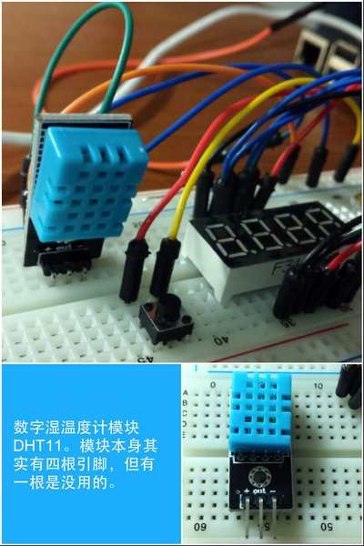
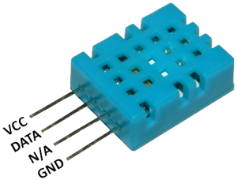
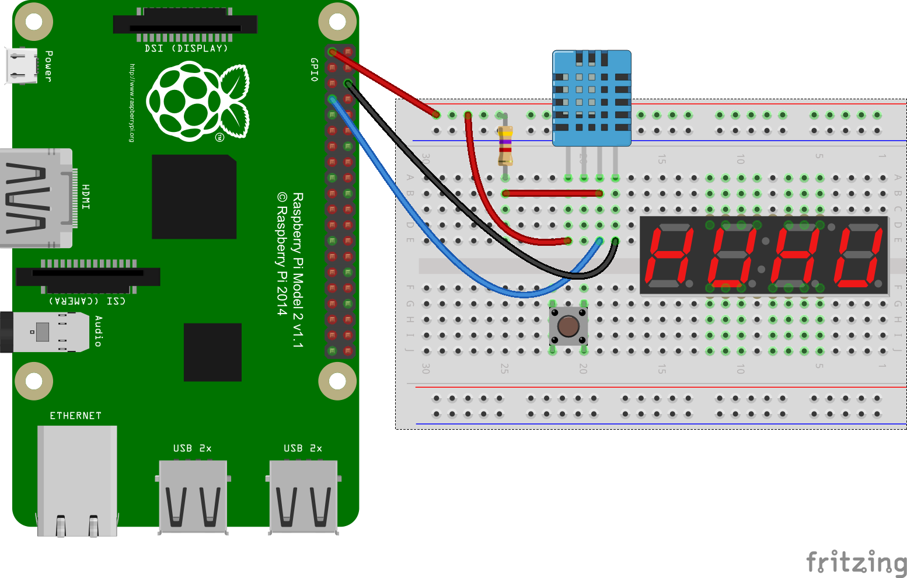
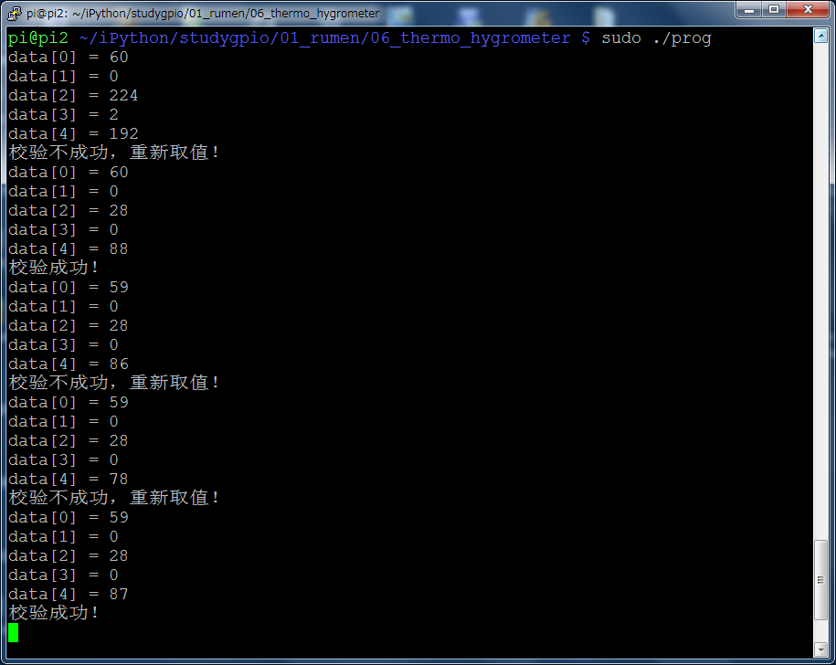

本文我们利用树莓派的GPIO口来跟数字湿温度计模块DHT11进行通信取得温度和湿度数据并显示在数码管上，通过按钮来切换显示温度或湿度。
最终效果

硬件
- 数码管
- 杜邦线
- 面包板
- 按钮1只
- 数字湿温度计DHT11模块。（我们这个教程里用到的所有电子元件均可在淘宝购买到）

原理说明
原始的DHT11模块有4根引脚，长成这个样子：

由图可以看出4根引脚里除了VCC，GND，DATA以外，还有一个引脚是N/A，也就是不使用。（不使用引出来干嘛？好看吗？不解）
本文使用的是又被封装了一次的模块，去掉了无用的引脚。其他3个引脚保留。功能完全一样，所以如果你手头上的DHT11是有4根引脚的请忽略N/A针脚，其他的跟我使用的这种完全通用。3个针脚分别连接到3.3v电源，GND和任意GPIO口上。根据数据手册（文末提供下载）的说明，总线（DATA引脚）在空闲状态需要保持高电平状态，所以我们除了将DATA引脚接到一个GPIO口上，还要通过一个4.7K（经实测2K左右的就够了）的电阻将DATA引脚并联到VCC上。这个电阻也称上拉电阻，电阻就是一般的电阻，只是在这里起的作用是上拉电平的作用所以称之为上拉电阻。
与DHT11通信时，发送和接收信息都在一根DATA口上，这种只用1根总线的数据传输方式称为单总线模式。
向DHT11发送数据时，GPIO口需要设置为OUTPUT模式，从DHT11接收数据时GPIO口需要切换成INPUT模式。
具体通信的时序如下：
- 由于有上拉电阻存在，总线（DATA）空闲状态为高电平。
- 树莓派GPIO口设置为OUTPUT模式。
- 树莓派向DHT11发送起始信号。方式是GPIO口设置低电平并持续一段时间，根据数据手册的说明，这段时间必须大于18毫秒，保证DHT11能检测到起始信号。
- 树莓派起始信号输出完毕，切换到输入模式，等待DHT11响应。一旦切换到输入模式GPIO口就不再输出电平信号，总线处于释放状态，由于有上拉电阻的存在，总线被拉回高电平。
- 在总线被拉回至高电平通知DHT11主机已经准备好接受数据以后，DHT11还会继续等待20-40us左右以后才会开始发送反馈信号。
- DHT11开始发送反馈信号，总线被DHT11拉低，持续80us左右。
- 这个持续了80us左右的低电平的反馈信号结束以后，DHT11又会将DATA口拉回高电平并再次持续80us左右。
- DHT11开始正式传输40bit的二进制数据（0或1）。每一个bit的数据（0或者1）总是由一段持续50us的低电平信号开始，再由一段持续26us-28us（数据0）或者持续70us（数据1）的高电平结束。一直到40位数据传输完毕。这40位的数据内容是：
8bit湿度整数数据 + 8bit湿度小数数据 + 8bi温度整数数据 + 8bit温度小数数据 + 8bit校验和。而校验和数据应该等于“湿度整数数据+湿度小数数据+温度整数数据+温度小数数据”所得结果的末8位。
我们的程序就应该遵循上述时序来与DHT11进行数据通信。
硬件连接
下面的连接图只标出了DHT11的连线和上拉电阻的连线方法。数码管和按钮的连线请参考上一篇。

关键代码
1
2
3
4
5
6
7
8
9
10
11
12
13
14
15
16
17
18
19
20
21
22
23
24
25
26
27
28
29
30
31
32
33
34
35
36
37
38
39
40
41
42
43
44
45
46
47
48
49
50
51
52
53
54
55
56
57
58
59
60
61
62
63
64
65
66
67
68
69
70
71
72
73
74
75
76
77
78
79
80
81
82
83
84
85
86
87
88
89
90
91
92
93
94
95
96
97
98
99
100
101
102
103
104
105
106
107
108
109
110
111
112
113
114
115
116
117
118
119
120
121
122
123
124
125
126
127
128
129
130
131
132
133
134
135
136
137
138
139
140
141
142
| void readDHT11() {
int i,j,cnt = 0;
for (j = 0; j < RETRY; ++j)
{
for (i = 0; i < 5; ++i) {
data[i] = 0;
}
pinMode (DATA, OUTPUT) ;
digitalWrite (DATA, HIGH);
usleep(500000);
digitalWrite (DATA, LOW);
usleep(TIME_START);
digitalWrite (DATA, HIGH);
pinMode (DATA, INPUT);
cnt=0;
while (digitalRead(DATA) == HIGH) {
cnt++;
if (cnt > MAXCNT)
{
printf("DHT11未响应，请检查连线是否正确，元件是否正常工作。\n");
exit(1);
}
}
cnt=0;
while (digitalRead(DATA) == LOW) {
cnt++;
if (cnt > MAXCNT)
{
printf("DHT11未响应，请检查连线是否正确，元件是否正常工作。\n");
exit(1);
}
}
cnt=0;
while (digitalRead(DATA) == HIGH) {
cnt++;
if (cnt > MAXCNT)
{
printf("DHT11未响应，请检查连线是否正确，元件是否正常工作。\n");
exit(1);
}
}
for (i = 0; i < 40; i++)
{
while (digitalRead(DATA) == LOW) {
}
cnt=0;
while (digitalRead(DATA) == HIGH) {
cnt++;
if (cnt > MAXCNT)
{
break;
}
}
if (cnt > MAXCNT)
{
break;
}
bits[i] = cnt;
}
for (i = 0; i < 40; ++i) {
data[i/8] <<= 1;
if (bits[i] > VAL)
{
data[i/8] |= 1;
}
}
for (i = 0; i < 5; ++i) {
printf("data[%d] = %d \n", i, data[i] );
}
if (data[4] == (data[0] + data[1] + data[2] + data[3]) & 0xFF ) {
printf("校验成功！ \n");
shidu = data[0];
wendu = data[2];
break;
} else {
printf("校验不成功，重新取值！ \n");
continue;
}
}
}
|
校验和
下图是实际运行时利用校验和检测到数据出现了接收错误的情况

资源下载
点击下载C源码
点击下载DHT11模块产品手册